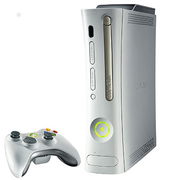

RetroArch 360
This is a port of RetroArch for the Xbox 360 games console. RetroArch 360 was first released to the public on 3 June 2012 [version 0.9.6]. It is currently at [version 0.9.9].
What do I need to use it on my Xbox 360?
In order to use RetroArch 360, you must have an Xbox 360 games console that has been jailbroken and/or is capable of running unsigned content.
Either one of the following would do:
- A debug console (XDK)
- A retail console either hacked through JTAG or RGH
Where to get it?
You can find the most recent version at "the usual places".